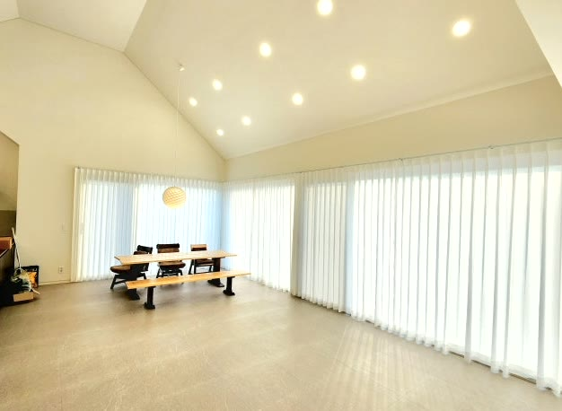
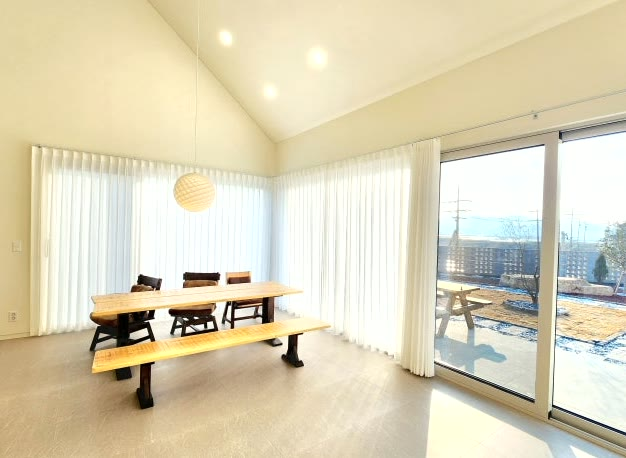
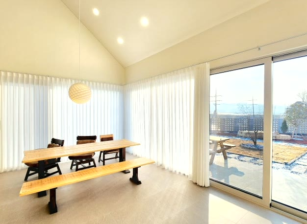

2026년 6월 24일 시공
영천 금호읍 단독주택
헤비쉬폰 커튼 시공후기

영천 금호읍 단독주택에 다녀왔습니다.
마당을 향해 길게 이어진 대형 통창과 높은 박공천장이 인상적인 신축 전원주택이었습니다.
거실 겸 다이닝으로 쓰는 넓은 공간이었는데, 가서 보니 왜 커튼이 필요한지 바로 알겠더라고요.
창이 크고 길어서 채광은 시원하게 좋은데, 그만큼 바깥에서 집 안이 그대로 들여다보이는 점이 부담이었습니다.
채광과 개방감은 그대로 살리면서 외부 시선만 가리고 싶다는 것이, 이번 시공의 핵심이었습니다.

큰 창일수록 시선 차단이 고민입니다
전원주택의 가장 큰 매력은 마당을 향한 넓은 창과 시원한 개방감입니다.
그런데 창이 크고 길수록 채광이 좋은 만큼, 바깥에서 안이 들여다보이는 점이 신경 쓰입니다.
암막으로 다 막아버리면 이 집의 가장 큰 장점인 환한 채광과 개방감이 사라집니다.
빛은 들이면서 시선만 가리는, 그 사이의 균형이 필요한 자리였습니다.
그래서 화이트 헤비쉬폰을 골랐습니다
이 조건에는 화이트 헤비쉬폰이 가장 잘 맞습니다.
헤비쉬폰은 일반 쉬폰보다 도톰하고 밀도가 높아, 빛은 부드럽게 들이면서 바깥에서 안을 들여다보는 시선은 가려 줍니다.
암막처럼 빛을 막지 않아, 거실의 환한 채광과 개방감을 그대로 살리면서 프라이버시를 확보할 수 있습니다.
화이트는 빛을 머금어 공간을 더 환하고 넓어 보이게 하고, 높은 박공천장의 시원한 구조와도 깔끔하게 어울립니다.

나비주름으로 풍성하게 잡았습니다
주름은 나비주름으로 잡았습니다.
나비주름으로 잡으면 주름이 일정하고 풍성하게 떨어져, 길게 이어진 통창 전체가 한결 고급스럽고 정돈된 느낌을 줍니다.
화이트 원단이 넉넉한 주름을 타고 떨어지니, 넓은 창이 허전하지 않고 볼륨감 있게 채워졌습니다.

큰 창은 실측과 마감이 관건입니다
천장이 높은 박공 구조에 통창 라인이 길어, 대형 실측이 중요한 현장이었습니다.
창 전체 길이에 맞춰 레일을 잡고, 나비주름 폭을 넉넉히 두어 주름이 고르게 떨어지도록 했습니다.
바닥선에 맞춰 길이를 정리해 끌리거나 뜨지 않게 마감했습니다.
슬라이딩 도어 출입부는 사람이 드나드는 동선을 고려해, 커튼이 자연스럽게 여닫히도록 배치했습니다.
관리는 이렇게 하시면 됩니다
헤비쉬폰은 평소 먼지를 가볍게 털어 주시고, 오염이 있을 때 부분 세탁하시면 오래 깨끗하게 쓰실 수 있습니다.
대형 통창처럼 면적이 넓은 커튼은 가끔 주름을 손으로 가지런히 정리해 주시면 라인이 더 예쁘게 유지됩니다.
대형 통창의 채광과 개방감은 그대로 살리고 외부 시선만 가리는 것 — 전원주택 거실에 꼭 필요한 두 가지를 화이트 나비주름 헤비쉬폰으로 정리해 드렸습니다.
큰 창이나 높은 천장 시공이 망설여지시면, 창 사진 한 장만 보내주셔도 대략 견적을 안내해 드립니다.
영천을 포함한 대구·경북 전 지역 단독주택·아파트·상가 실측 상담 도와드리고 있습니다.